jobiss. 포트폴리오 이미지
실제 화면 6장 · 설계 목업 및 설명 자료 7장 / 설명용 동일 경험으로 구성
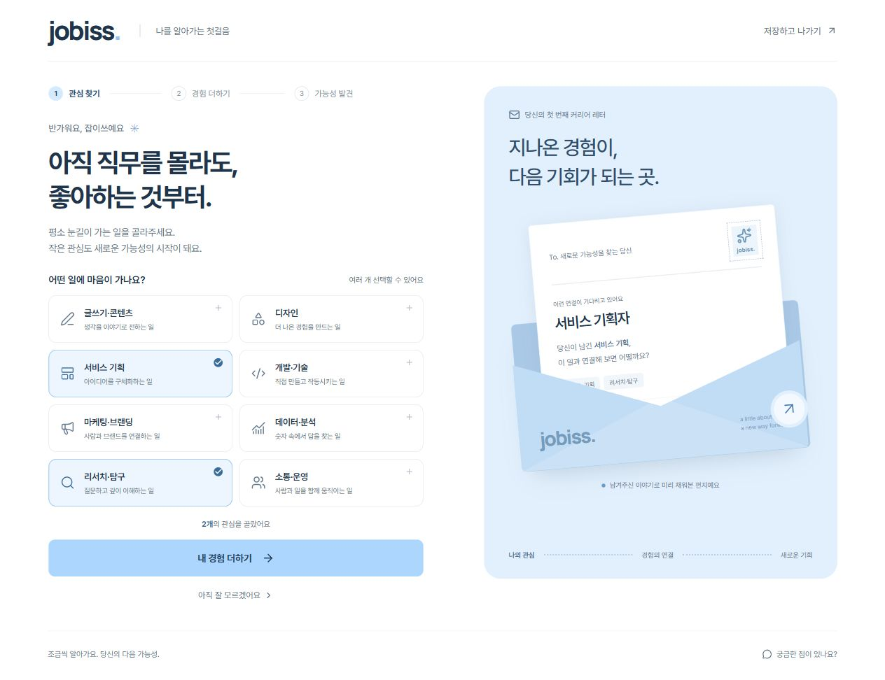
관심 선택 · 실제 화면
01-interest-actual.jpg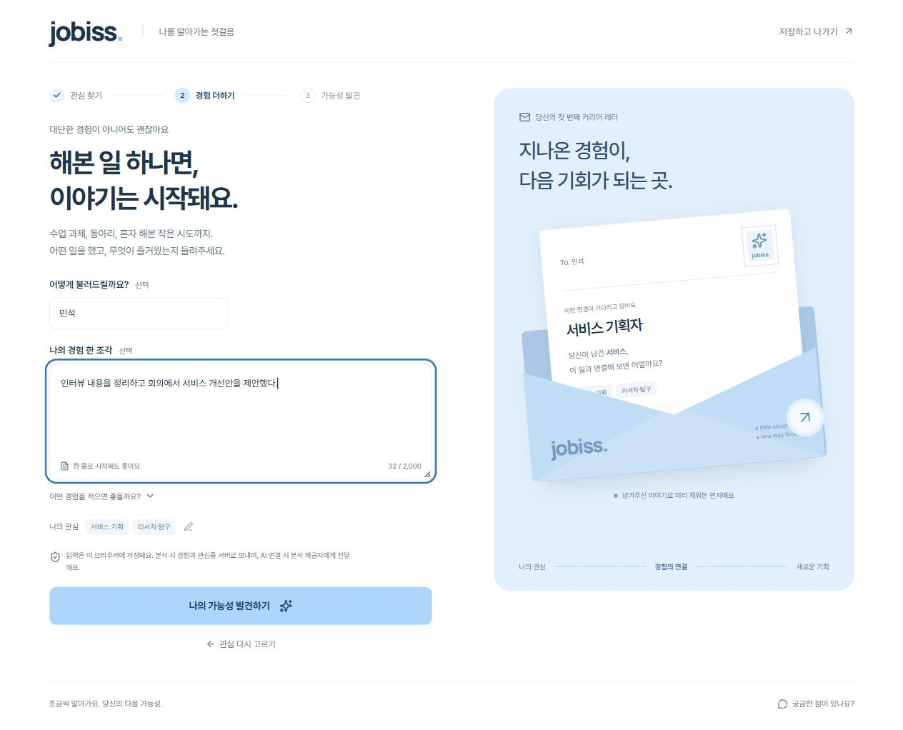
경험 입력 · 실제 화면
02-experience-actual.jpg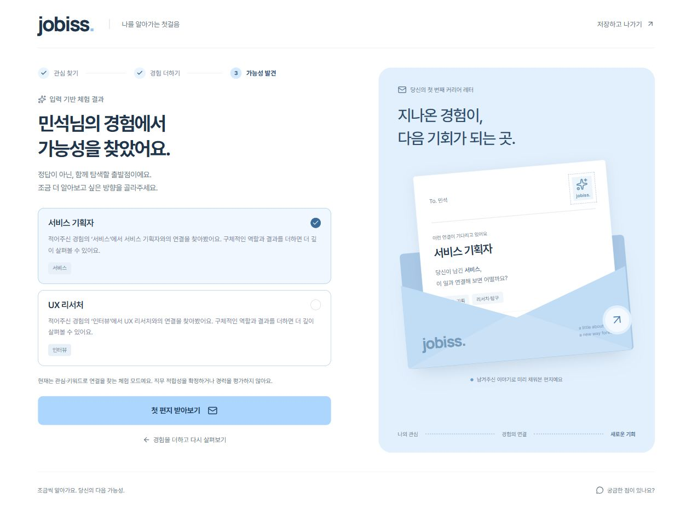
직무 가능성 · 실제 화면
03-role-hypotheses-actual.jpg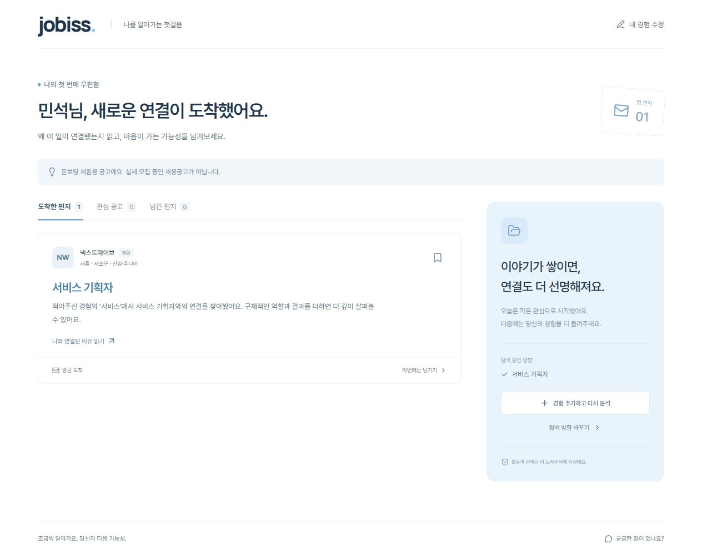
체험 우편함 · 실제 화면
04-inbox-actual.jpg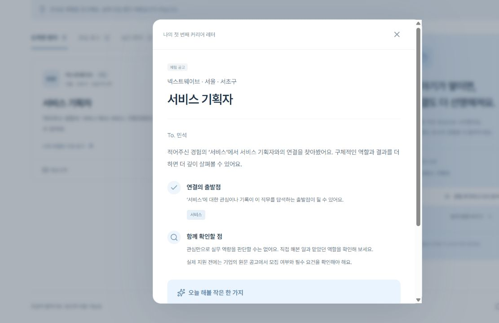
커리어 편지 · 실제 화면
05-job-letter-actual.jpg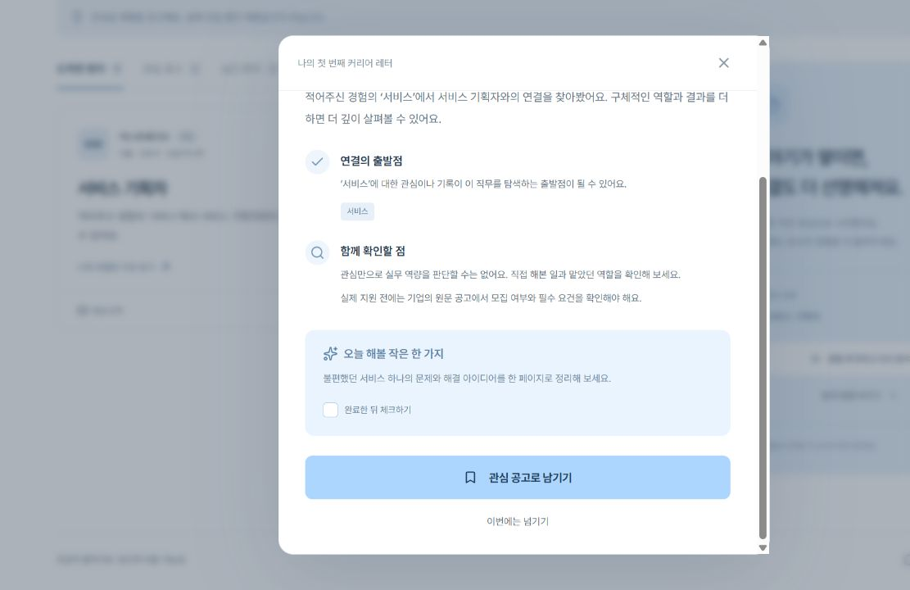
편지 다음 행동 · 실제 화면
05b-job-letter-actions-actual.jpg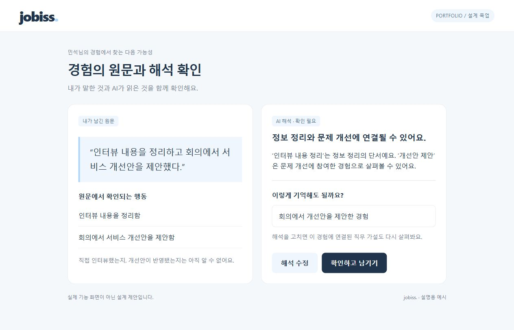
원문과 해석 확인 · 설계 목업
06-evidence-review-design.jpg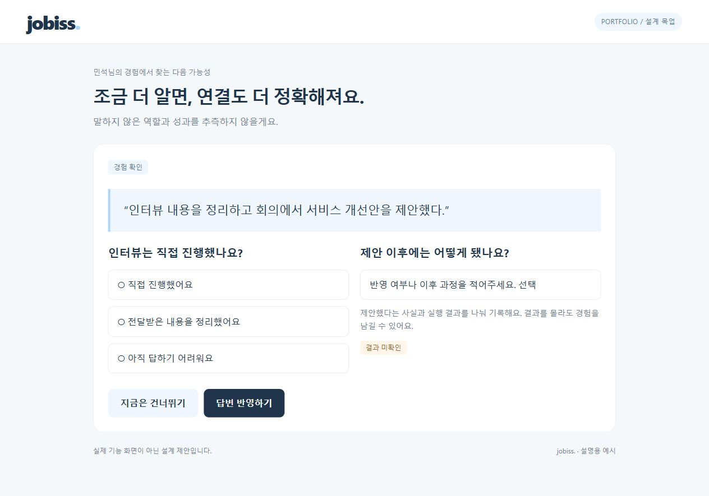
추가 질문 · 설계 목업
07-followup-question-design.jpg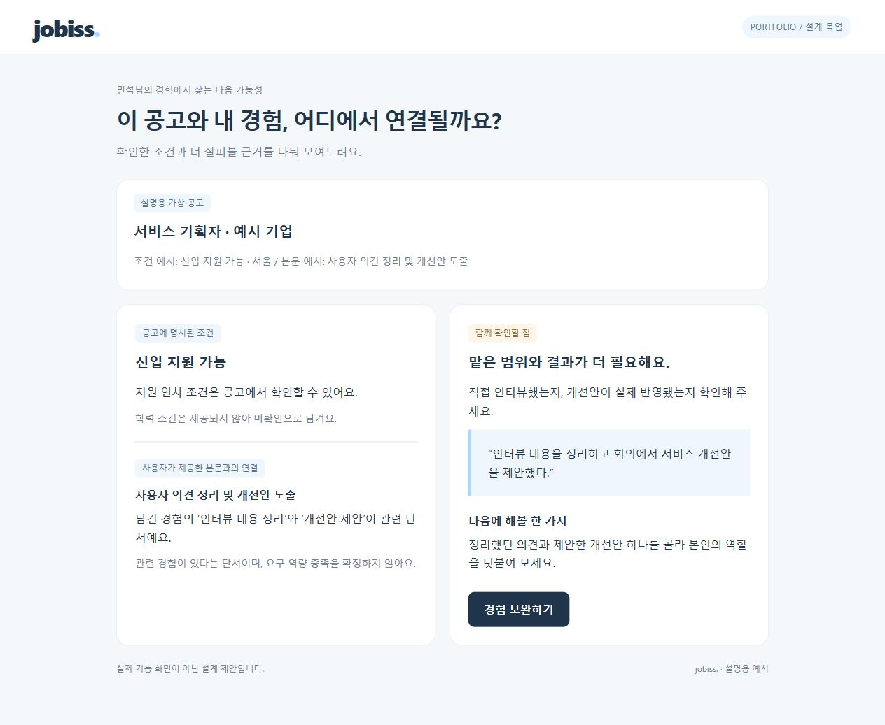
공고 비교 · 설계 목업
08-job-comparison-design.jpg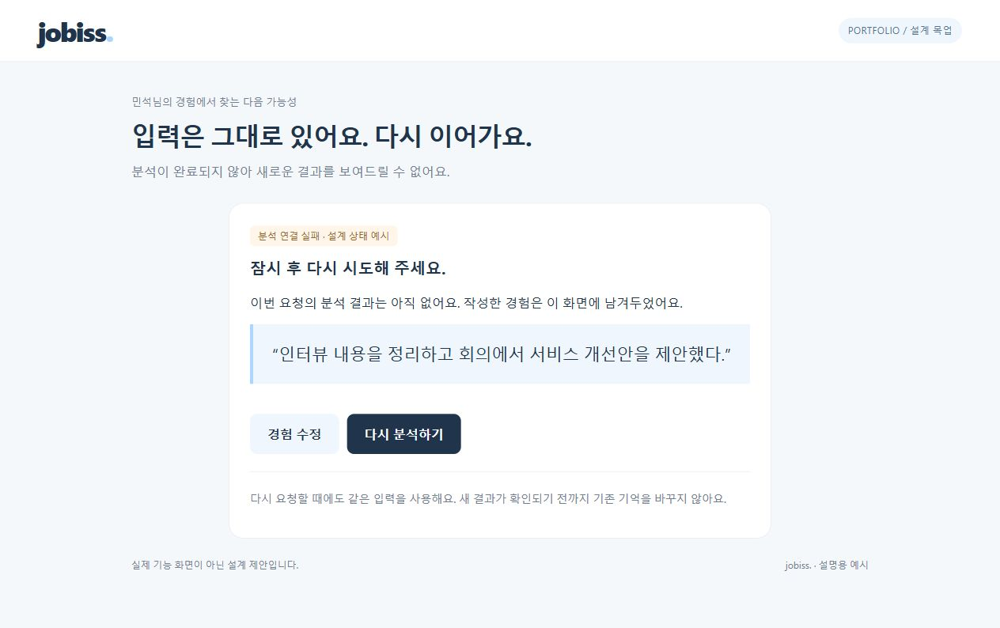
분석 실패 · 설계 목업
09-analysis-failure-design.jpg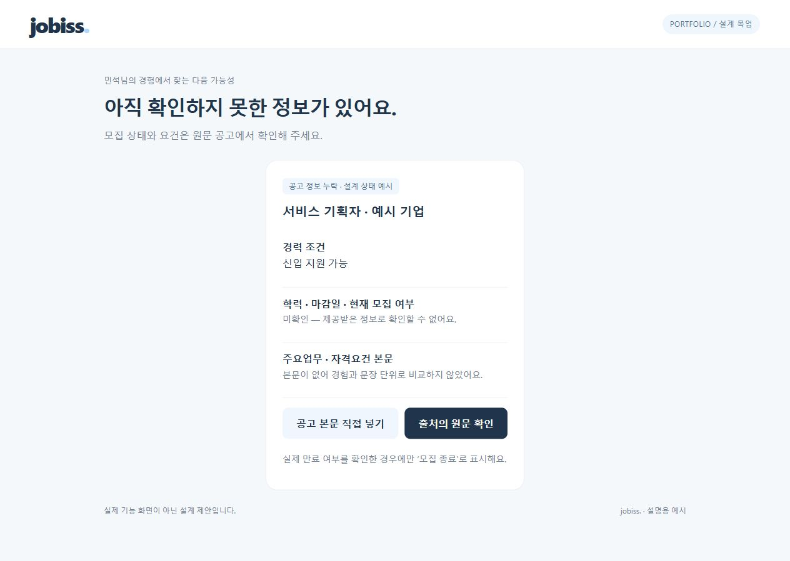
공고 정보 누락 · 설계 목업
10-missing-job-data-design.jpg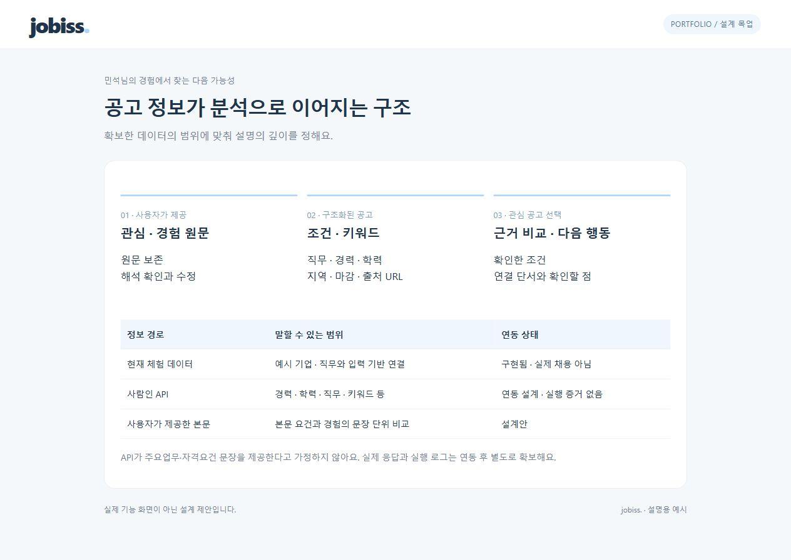
데이터 연결 · 설계 설명
11-data-flow-design.jpg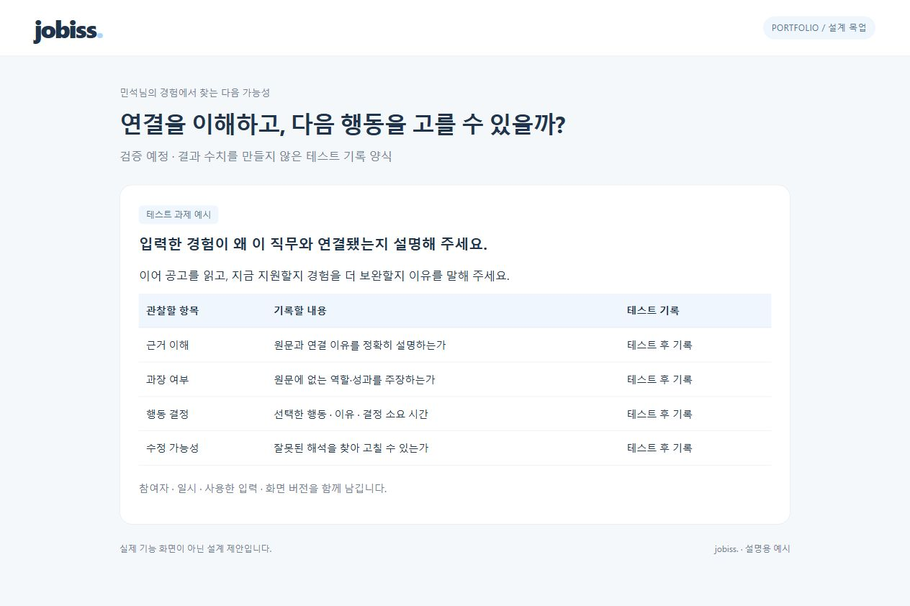
검증 기록 양식 · 검증 예정
12-validation-plan-design.jpg